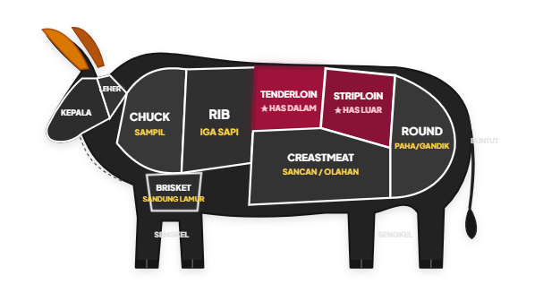

Diproduksi langsung oleh PT. Berkah Marsha Sejahtera di Rumah Pemotongan Hewan resmi ber-NKV dan 100% Halal Indonesia. Setiap pack ditimbang akurat, dikemas vakum higienis, dan dijaga kesegarannya tanpa kompromi.

Dari pemotongan hingga ke tangan Anda, setiap langkah mengikuti prosedur keamanan pangan ketat untuk menjamin kelezatan, higienitas, dan kehalalan.
Dipilih dari sapi sehat berkualitas prima dengan potongan rapi sesuai standar pemotongan daging profesional (butcher cut).
Timbangan digital industri hingga 2 angka desimal (0.01 kg) dan pencatatan jumlah pcs, memastikan HPP dan porsi Anda akurat 100%.
Suhu simpan terkontrol ketat (Chill 0°C hingga 90 hari, Frozen -18°C hingga 365 hari) menjaga warna, tekstur, dan kesegaran daging.
Diproduksi di unit usaha pemotongan resmi ber-NKV RPH-3276041-016 serta jaminan sertifikasi Halal Indonesia.
Pahami karakter tiap potongan daging agar masakan Anda menghasilkan tekstur, aroma, dan keempukan maksimal.

💡 Klik potongan di bawah untuk melihat karakteristik daging & rekomendasi masak:
Potongan memanjang di bagian punggung dalam sapi. Karena otot ini jarang bekerja keras, seratnya sangat halus dan merupakan potongan terempuk di seluruh karkas sapi.
Tersedia dalam kondisi dingin (Chill) untuk pemakaian langsung maupun beku (Frozen) untuk stok tahan lama.
Has dalam, bagian daging sapi paling empuk dan lembut dengan kadar lemak yang sangat rendah. Tekstur seratnya halus dan juicy saat dimasak.
Tanya Stok di WhatsAppHas luar (sirloin) dengan lapisan lemak gurih tipis di pinggirnya (fat cap). Memberikan aroma panggang yang kaya dan sensasi rasa umami istimewa.
Tanya Stok di WhatsAppDaging has luar yang telah di-portion cut dengan ketebalan presisi standar chef. Siap masak langsung tanpa perlu repot memotong, sangat praktis!
Tanya Stok di WhatsAppPotongan daging sapi pilihan dengan perpaduan serat daging gurih dan sari kaldu alami melimpah. Menghasilkan olahan masakan berkuah yang kaya rasa.
Tanya Stok di WhatsAppKetahui suhu interior, waktu memanggang per sisi, dan karakter rasa dari setiap tingkatan doneness daging sapi pilihan Anda.
Pusat daging bersuhu hangat dan berwarna merah cerah, dengan pinggiran cokelat beraroma panggangan. Sangat berair (juicy) dan empuk.
Bingung mau beli daging berapa kilogram untuk acara Anda? Geser slider di bawah, kami hitungkan porsi optimal agar tidak kurang dan tidak berlebih.
Kami menerapkan sistem cold chain ketat agar pertumbuhan bakteri terhambat maksimal dan kesegaran daging alami tetap terjaga sempurna.
Daging dingin segar yang disimpan pada suhu stabil 0°C. Sangat ideal untuk restoran, katering, atau keluarga yang berencana memasak daging dalam waktu dekat tanpa perlu proses thawing (mencairkan es).
Daging yang dibekukan secara cepat pada temperatur optimal -18°C. Pembekuan cepat mengunci kesegaran sel daging sehingga nutrisi dan kualitasnya tidak berkurang saat disimpan lama di freezer.
Hindari kesalahan umum yang membuat daging kehilangan sari alaminya atau terkontaminasi bakteri. Ikuti 3 metode aman ini:
Pindahkan daging beku dari freezer ke rak kulkas bawah (chiller suhu 0°C – 4°C) sekitar 12–24 jam sebelum dimasak. Serat daging mencair perlahan tanpa merusak kelembapan sari alaminya.
Jika butuh cepat, rendam kemasan vakum daging yang masih rapat ke dalam baskom berisi air dingin mengalir (jangan air hangat). Biasanya daging cair merata dalam waktu 30 – 60 menit.
Untuk potongan tertentu seperti Striploin Steak Ready dengan ketebalan standar, Anda bisa memanggangnya dengan teknik *reverse sear* pada api kecil-sedang langsung dari kondisi setengah beku.
Seluruh produk daging CMM Meat bersumber dan diproses di unit pemotongan hewan resmi milik PT. Berkah Marsha Sejahtera yang berlokasi di Tapos, Kota Depok. Kami memegang teguh standar higienis-sanitasi dan syariat penyembelihan halal.
 100% Halal Indonesia
100% Halal Indonesia
Disembelih secara syar'i oleh juru sembelih halal terlatih.
Baik untuk masak sehari-hari di rumah maupun pengadaan kontinu bagi bisnis kuliner Anda.
Porsi higienis, bersih dan siap simpan di kulkas keluarga. Aman dan sehat untuk santapan sehari-hari.
Pasokan konsisten, ketebalan potongan seragam, dan rasa gurih alami yang disukai pengunjung restoran Anda.
Akurasi berat dan jumlah pcs memudahkan kalkulasi HPP masakan hajatan atau paket bento katering.
Harga kemitraan bersaing dengan kemasan berlabel resmi yang siap langsung dipajang di freezer etalase Anda.
Dari chef restoran hingga keluarga pencinta steak rumahan, ini pengalaman mereka menggunakan daging sapi CMM Meat.
Pilih produk yang Anda butuhkan, kami akan siapkan pesan WhatsApp yang rapi secara otomatis.
Informasi seputar sertifikasi, pemesanan, dan jaminan kesegaran daging CMM Meat.
Punya pertanyaan mengenai stok karkas, potongan spesifik, atau kerjasama pasokan rutin restoran? Tim kami siap melayani Anda dengan senang hati.
Jl. Raya Tapos RT. 01/03, Kel. Tapos, Kec. Tapos, Kota Depok, Jawa Barat
Senin – Sabtu: 07.00 – 17.00 WIB
+62 858-9195-5438 (Chat Aktif)
Dapatkan penawaran harga terbaik untuk kebutuhan dapur rumahan maupun suplai Horeca bisnis Anda.
Chat Langsung di WhatsApp